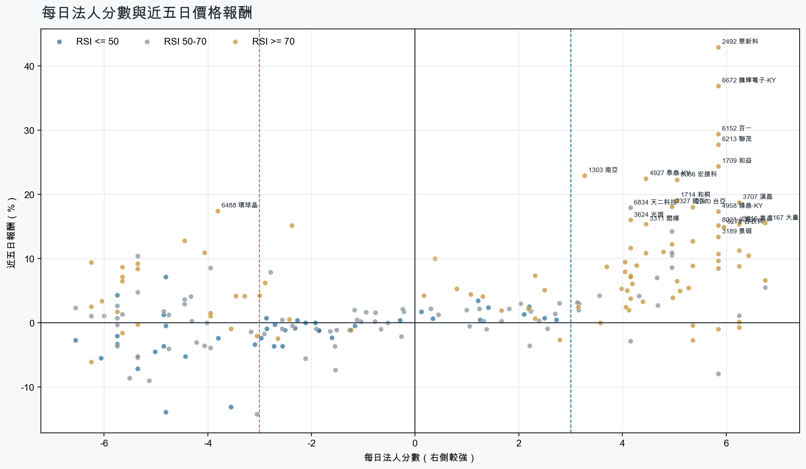
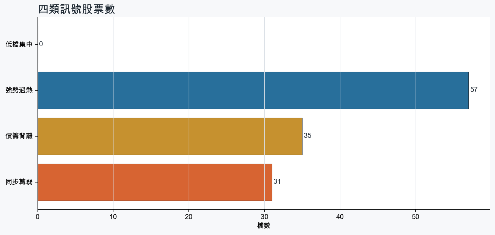
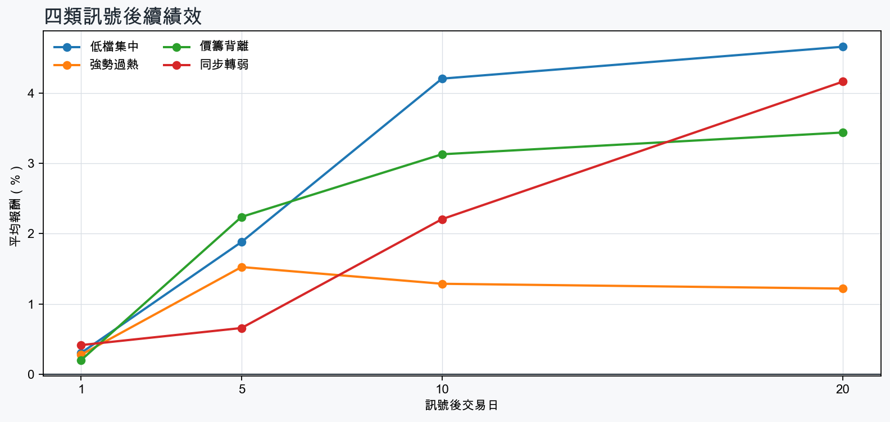

市場情緒中性分歧
近5日法人合計-15,628 張
篩選池上漲比例67.3%
籌碼好 / RSI低0 檔
籌碼差 / 價跌15 檔



EPS × PE VALUATION
法人常用的相對估值
顯示保守、基準與樂觀估值帶，不把單一數字包裝成精準目標價。
最新累計 EPS 依季數年化 × 同產業有效 P/E 的 Q25／中位數／Q75。排除本公司、非正 P/E，並以 1.5×IQR 排除離群值。估值帶是公開資料篩選值，不是法人目標價；未使用分析師預估 EPS。
MOOD × MONEY
情緒與籌碼雷達
熱度代表被討論程度；情緒分與法人方向分開計算。熱門不等於適合追價，樣本不足也不硬判多空。
| 股票 | 情緒 | 討論熱度 | 情緒 × 籌碼 | 情緒 × 基本面 |
|---|---|---|---|---|
| 3260 威剛同步轉弱 | 中性分歧 +0.7信心 100 | 1001 篇 / 136 留言 / 3 則新聞 | 高熱分歧法人分 -5.8 | 基本面與情緒分歧基本面分 +3.6 |
| 3105 穩懋強勢過熱 | 情緒高漲 +67.1信心 67 | 761 篇 / 30 留言 / 3 則新聞 | 情籌共振法人分 +5.8 | 基本面與情緒共振基本面分 +3.6 |
| 5351 鈺創價籌背離 | 偏多 +31.6信心 66 | 741 篇 / 25 留言 / 3 則新聞 | 熱門但法人撤退法人分 -4.5 | 基本面與情緒共振基本面分 +3.6 |
| 3189 景碩強勢過熱 | 情緒高漲 +59.8信心 60 | 701 篇 / 17 留言 / 3 則新聞 | 情籌共振法人分 +5.8 | 基本面與情緒共振基本面分 +3.6 |
| 3035 智原強勢過熱 | 偏多 +25.7信心 60 | 671 篇 / 13 留言 / 3 則新聞 | 情籌共振法人分 +6.2 | 基本面與情緒共振基本面分 +1.2 |
| 3167 大量強勢過熱 | 中性分歧 +0.0信心 29 | 641 篇 / 18 留言 / 0 則新聞 | 情籌混合法人分 +6.8 | 基本面與情緒分歧基本面分 +3.6 |
| 2305 全友同步轉弱 | 中性分歧 +0.0信心 30 | 460 篇 / 0 留言 / 3 則新聞 | 情籌混合法人分 -3.0 | 基本面與情緒分歧基本面分 +3.6 |
| 6244 茂迪同步轉弱 | 中性分歧 +0.0信心 30 | 460 篇 / 0 留言 / 3 則新聞 | 情籌混合法人分 -5.1 | 基本面與情緒分歧基本面分 +1.7 |
| 3006 晶豪科同步轉弱 | 偏多 +29.7信心 30 | 460 篇 / 0 留言 / 3 則新聞 | 熱門但法人撤退法人分 -5.3 | 基本面與情緒共振基本面分 +3.6 |
| 4763 材料*-KY同步轉弱 | 中性分歧 +0.0信心 30 | 460 篇 / 0 留言 / 3 則新聞 | 情籌混合法人分 -4.4 | 基本面與情緒分歧基本面分 +1.8 |
| 5314 世紀*同步轉弱 | 中性分歧 +0.0信心 30 | 460 篇 / 0 留言 / 3 則新聞 | 情籌混合法人分 -5.0 | 基本面與情緒分歧基本面分 +3.6 |
| 6488 環球晶價籌背離 | 偏多 +29.7信心 30 | 460 篇 / 0 留言 / 3 則新聞 | 熱門但法人撤退法人分 -3.8 | 基本面與情緒共振基本面分 +1.1 |
01
籌碼好 / RSI低
優先研究基本面；法人續買且價格止穩時，才適合分批觀察。
今日沒有股票同時符合本組的完整條件。
02
籌碼好 / RSI高
趨勢強但不追價，等待量縮、RSI降溫或回測支撐。
| 股票 / 確認狀態 | 每日法人分 | 浦男式近似 | 法人加速度 | RSI / 相對強弱 | 量價確認 | 融資融券 | 每週集保確認 | 基本面 | EPS × 同業 P/E 估值 | 情緒 / 情籌 | 近期消息 | 論壇討論 |
|---|---|---|---|---|---|---|---|---|---|---|---|---|
| 3624 光頡等待拉回 · 100 分等拉回，不追價 | +4.2法人 +6,827 張 / 3 天 | 命中 · 96站上月線；中期均線偏多；法人籌碼偏多；留意動能位置非最佳 | +10,949 張近3日 +8,027 / 連續 +1 日 | 71.2相對大盤 +59.4% | 量比 1.08確認分 +6.5價格、量能與籌碼未見明顯弱項 | +3.5%融資 +485 張 / 融券 +37 張 | +5.48 pp1000張 +3.90 pp | 單月營收年增 +65.8%；累計營收年增 +30.7%；2026 Q2 累計 EPS 1.86仍需觀察下一期財報延續性來源：公開資訊觀測站 | 基準 NT$ 102.9估值帶 69.64–175.2現價 159.5 · 估值帶內 · 距基準 -35.5%2026 Q2 累計 EPS 1.86 → 年化 3.72電子零組件同業 P/E 18.72／27.67／47.10 · n=149 · 信心中等以 Q2 累計 EPS 年化，不等同分析師全年預估來源：TWSE／TPEx 每日本益比 | 偏多 +29.7熱度 46 / 信心 30情籌共振 | 熱門股／三星電機再簽MLCC長約！華新科、光頡等8檔漲停國巨登2個半月高| 產經非凡新聞台 · 10/07【09:04 即時新聞】光頡(3624)亮燈漲停，市場聚焦營收連四月創高CMoney投資網誌 · 10/07 | 近期沒有明確提及本股的論壇樣本 |
| 2484 希華等待拉回 · 100 分等拉回，不追價 | +4.2法人 +8,308 張 / 3 天 | 命中 · 96站上月線；中期均線偏多；法人籌碼偏多；留意動能位置非最佳 | +1,021 張近3日 +4,066 / 連續 +1 日 | 77.1相對大盤 +18.7% | 量比 1.55確認分 +6.5價格、量能與籌碼未見明顯弱項 | -%融資 - 張 / 融券 - 張 | +10.40 pp1000張 +8.34 pp | 單月營收年增 +25.1%；累計營收年增 +1.7%；2026 Q2 累計 EPS 0.86仍需觀察下一期財報延續性來源：公開資訊觀測站 | 基準 NT$ 47.06估值帶 32.10–78.91現價 87.10 · 高於估值帶 · 距基準 -46.0%2026 Q2 累計 EPS 0.86 → 年化 1.72電子零組件同業 P/E 18.66／27.36／45.88 · n=147 · 信心中等以 Q2 累計 EPS 年化，不等同分析師全年預估來源：TWSE／TPEx 每日本益比 | 中性分歧 +0.0熱度 39 / 信心 20情籌混合 | 【13:00 即時新聞】希華(2484)勁揚走強，買盤回流成盤中焦點CMoney投資網誌 · 10/072484 希華- ?要死趕快死- 股市爆料同學會CMoney · 10/07 | 近期沒有明確提及本股的論壇樣本 |
| 3105 穩懋等待拉回 · 100 分等拉回，不追價 | +5.8法人 +19,763 張 / 4 天 | 命中 · 84站上月線；中期均線偏多；法人籌碼偏多；留意法人買盤未加速、量能尚未確認 | -11,074 張近3日 +11,307 / 連續 +1 日 | 77.5相對大盤 +25.3% | 量比 0.82確認分 +1.8法人買盤減速 | +1.0%融資 +464 張 / 融券 -82 張 | +6.79 pp1000張 +6.93 pp | 單月營收年增 +30.6%；累計營收年增 +33.0%；2026 Q2 累計 EPS 3.56仍需觀察下一期財報延續性來源：公開資訊觀測站 | 基準 NT$ 200.6估值帶 132.0–363.1現價 588.0 · 高於估值帶 · 距基準 -65.9%2026 Q2 累計 EPS 3.56 → 年化 7.12半導體同業 P/E 18.54／28.18／51.00 · n=150 · 信心中等以 Q2 累計 EPS 年化，不等同分析師全年預估來源：TWSE／TPEx 每日本益比 | 情緒高漲 +67.1熱度 76 / 信心 67情籌共振 | TWA00 加權指數- 穩懋站回月線後，前波區間獲利第一的分點又回來了！ - 股市爆料同學會CMoney · 10/07相對高點倒貨、區間獲利第一的那隻手，站上月線後又回來了——用4步驟找出穩懋的關鍵主力CMoney投資網誌 · 10/07 | [情報] 穩懋 3105 9月營收PTT Stock · 10-05 · 30 留言 |
| 6209 今國光等待拉回 · 100 分等拉回，不追價 | +6.2法人 +10,153 張 / 5 天 | 接近 · 90站上月線；中期均線偏多；法人籌碼偏多；留意RSI過熱 | +8,577 張近3日 +8,790 / 連續 +5 日 | 78.2相對大盤 +9.7% | 量比 1.92確認分 +6.5價格、量能與籌碼未見明顯弱項 | -%融資 - 張 / 融券 - 張 | +0.21 pp1000張 +0.72 pp | 單月營收年增 +106.8%；累計營收年增 +69.6%；2026 Q2 累計 EPS 1.53仍需觀察下一期財報延續性來源：公開資訊觀測站 | 基準 NT$ 75.80估值帶 40.12–120.0現價 90.90 · 估值帶內 · 距基準 -16.6%2026 Q2 累計 EPS 1.53 → 年化 3.06光電同業 P/E 13.11／24.77／39.21 · n=67 · 信心中等以 Q2 累計 EPS 年化，不等同分析師全年預估來源：TWSE／TPEx 每日本益比 | 樣本不足 +0.0熱度 0 / 信心 0情緒樣本不足 | 近期沒有通過股票語境篩選的新聞 | 近期沒有明確提及本股的論壇樣本 |
| 6257 矽格等待拉回 · 100 分等拉回，不追價 | +4.0法人 +7,438 張 / 2 天 | 接近 · 80站上月線；中期均線偏多；法人籌碼偏多；留意買超延續不足、量能尚未確認 | +580 張近3日 +5,700 / 連續 -1 日 | 80.8相對大盤 +25.3% | 量比 2.90確認分 +5.2價格、量能與籌碼未見明顯弱項 | -%融資 - 張 / 融券 - 張 | +7.00 pp1000張 +6.53 pp | 單月營收年增 +28.6%；累計營收年增 +20.5%；2026 Q2 累計 EPS 4.65仍需觀察下一期財報延續性來源：公開資訊觀測站 | 基準 NT$ 262.1估值帶 172.4–488.2現價 278.0 · 估值帶內 · 距基準 -5.7%2026 Q2 累計 EPS 4.65 → 年化 9.30半導體同業 P/E 18.54／28.18／52.50 · n=150 · 信心中等以 Q2 累計 EPS 年化，不等同分析師全年預估來源：TWSE／TPEx 每日本益比 | 偏多 +29.7熱度 46 / 信心 30情籌共振 | 矽格光通訊營收明年拚倍數成長 AI測試需求強勁台視全球資訊網 · 10/076257矽格2026Q3法說會重點：上半年EPS 4.65元創新高！ 光通訊明年營收看倍數成長？StockFeel 股感 · 10/07 | 近期沒有明確提及本股的論壇樣本 |
| 3016 嘉晶等待拉回 · 100 分等拉回，不追價 | +6.2法人 +5,421 張 / 5 天 | 接近 · 80站上月線；中期均線偏多；法人籌碼偏多；留意量能異常、RSI過熱 | +2,825 張近3日 +2,585 / 連續 +5 日 | 95.2相對大盤 +88.8% | 量比 0.19確認分 +5.2成交量不足 | -%融資 - 張 / 融券 - 張 | +7.23 pp1000張 +8.42 pp | 單月營收年增 +57.8%；累計營收年增 +34.7%；2026 Q2 累計 EPS 1.00仍需觀察下一期財報延續性來源：公開資訊觀測站 | 基準 NT$ 56.80估值帶 37.24–104.0現價 195.0 · 高於估值帶 · 距基準 -70.9%2026 Q2 累計 EPS 1.00 → 年化 2.00半導體同業 P/E 18.62／28.40／52.02 · n=151 · 信心中等以 Q2 累計 EPS 年化，不等同分析師全年預估來源：TWSE／TPEx 每日本益比 | 樣本不足 +0.0熱度 0 / 信心 0情緒樣本不足 | 近期沒有通過股票語境篩選的新聞 | 近期沒有明確提及本股的論壇樣本 |
| 3293 鈊象等待拉回 · 93 分等拉回，不追價 | +5.8法人 +4,935 張 / 4 天 | 接近 · 79站上月線；中期均線偏多；法人籌碼偏多；留意法人買盤未加速、量能異常 | -4,306 張近3日 +872 / 連續 +3 日 | 75.0相對大盤 +4.6% | 量比 0.32確認分 +0.9成交量不足；法人買盤減速 | -2.4%融資 -52 張 / 融券 +0 張 | +3.57 pp1000張 +2.89 pp | 單月營收年增 +24.8%；累計營收年增 +18.1%；2026 Q2 累計 EPS 22.77仍需觀察下一期財報延續性來源：公開資訊觀測站 | 基準 NT$ 644.9估值帶 510.5–1,403現價 780.0 · 估值帶內 · 距基準 -17.3%2026 Q2 累計 EPS 22.77 → 年化 45.54文化創意同業 P/E 11.21／14.16／30.81 · n=14 · 信心中等以 Q2 累計 EPS 年化，不等同分析師全年預估來源：TWSE／TPEx 每日本益比 | 樣本不足 +0.0熱度 28 / 信心 10情緒樣本不足 | 3293 鈊象 - 日期.1007 收盤.780元 漲跌+0元 幅度+0.00%... - 股市爆料同學會CMoney · 10/07 | 近期沒有明確提及本股的論壇樣本 |
| 3167 大量等待拉回 · 96 分等拉回，不追價 | +6.8法人 +3,291 張 / 5 天 | 接近 · 79站上月線；中期均線偏多；法人籌碼偏多；留意法人買盤未加速、量能異常 | -1,228 張近3日 +660 / 連續 +5 日 | 77.3相對大盤 +10.8% | 量比 0.30確認分 +1.1成交量不足；法人買盤減速 | -%融資 - 張 / 融券 - 張 | +3.26 pp1000張 +0.47 pp | 單月營收年增 +153.0%；累計營收年增 +135.2%；2026 Q2 累計 EPS 9.26仍需觀察下一期財報延續性來源：公開資訊觀測站 | 基準 NT$ 351.5估值帶 250.9–536.0現價 1,025 · 高於估值帶 · 距基準 -65.7%2026 Q2 累計 EPS 9.26 → 年化 18.52電機機械同業 P/E 13.55／18.98／28.94 · n=72 · 信心中等以 Q2 累計 EPS 年化，不等同分析師全年預估來源：TWSE／TPEx 每日本益比 | 中性分歧 +0.0熱度 64 / 信心 29情籌混合 | 近期沒有通過股票語境篩選的新聞 | [情報] 3167 大量 115年9月營收PTT Stock · 10-05 · 18 留言 |
| 5347 世界等待拉回 · 100 分等拉回，不追價 | +5.1法人 +15,303 張 / 4 天 | 接近 · 90站上月線；中期均線偏多；法人籌碼偏多；留意RSI過熱 | +8,431 張近3日 +11,050 / 連續 +2 日 | 87.0相對大盤 +16.6% | 量比 1.00確認分 +7.1價格、量能與籌碼未見明顯弱項 | -3.3%融資 -397 張 / 融券 +155 張 | +2.14 pp1000張 +2.15 pp | 單月營收年增 +40.5%；累計營收年增 +18.4%；2026 Q2 累計 EPS 2.84仍需觀察下一期財報延續性來源：公開資訊觀測站 | 基準 NT$ 160.1估值帶 105.3–298.2現價 190.0 · 估值帶內 · 距基準 -15.8%2026 Q2 累計 EPS 2.84 → 年化 5.68半導體同業 P/E 18.54／28.18／52.50 · n=150 · 信心中等以 Q2 累計 EPS 年化，不等同分析師全年預估來源：TWSE／TPEx 每日本益比 | 偏多 +19.8熱度 39 / 信心 20情籌混合 | 台股擊敗韓國成為世界市場主導力量 外媒曝原因自由財經 · 10/07早安世界》超微蘇姿丰將加碼在台投資稱台灣對半導體供應鏈至關重要| 生活中央社 CNA · 10/07 | 近期沒有明確提及本股的論壇樣本 |
| 6271 同欣電等待拉回 · 100 分等拉回，不追價 | +6.8法人 +2,758 張 / 5 天 | 接近 · 79站上月線；中期均線偏多；法人籌碼偏多；留意相對強度普通、RSI過熱 | +1,196 張近3日 +1,958 / 連續 +5 日 | 78.9相對大盤 -1.4% | 量比 1.22確認分 +4.2價格、量能與籌碼未見明顯弱項 | -%融資 - 張 / 融券 - 張 | +1.14 pp1000張 -0.44 pp | 單月營收年增 +23.1%；累計營收年增 +6.8%；2026 Q2 累計 EPS 4.37仍需觀察下一期財報延續性來源：公開資訊觀測站 | 基準 NT$ 249.1估值帶 162.0–458.9現價 241.5 · 估值帶內 · 距基準 +3.1%2026 Q2 累計 EPS 4.37 → 年化 8.74半導體同業 P/E 18.54／28.50／52.50 · n=150 · 信心中等以 Q2 累計 EPS 年化，不等同分析師全年預估來源：TWSE／TPEx 每日本益比 | 樣本不足 +0.0熱度 0 / 信心 0情緒樣本不足 | 近期沒有通過股票語境篩選的新聞 | 近期沒有明確提及本股的論壇樣本 |
| 1802 台玻等待拉回 · 100 分等拉回，不追價 | +5.8法人 +34,157 張 / 4 天 | 接近 · 86站上月線；中期均線偏多；法人籌碼偏多；留意量能異常、動能位置非最佳 | +27,250 張近3日 +33,629 / 連續 +4 日 | 75.7相對大盤 +3.0% | 量比 5.13確認分 +4.1價格、量能與籌碼未見明顯弱項 | -%融資 - 張 / 融券 - 張 | -0.06 pp1000張 +0.04 pp | 單月營收年增 +32.6%；累計營收年增 +16.6%；2026 Q2 累計 EPS 0.64仍需觀察下一期財報延續性來源：公開資訊觀測站 | 不適用同產業有效 P/E 樣本不足（3 檔） | 偏多 +29.7熱度 46 / 信心 30情籌共振 | PCB 相關族群輪動 下一棒轉戰玻纖布？台玻放量漲停經濟日報 · 10/071802 台玻- 10/7(三) 自營商- 股市爆料同學會CMoney · 10/07 | 近期沒有明確提及本股的論壇樣本 |
| 3035 智原等待拉回 · 100 分等拉回，不追價 | +6.2法人 +5,863 張 / 5 天 | 接近 · 81站上月線；中期均線偏多；法人籌碼偏多；留意量能尚未確認、RSI過熱 | +857 張近3日 +3,318 / 連續 +5 日 | 86.8相對大盤 +11.5% | 量比 0.66確認分 +5.8價格、量能與籌碼未見明顯弱項 | -%融資 - 張 / 融券 - 張 | +3.29 pp1000張 +5.84 pp | 單月營收年增 +29.9%；2026 Q2 累計 EPS 1.16累計營收年增 -41.1%；2026 Q2 累計營益率 6.2%來源：公開資訊觀測站 | 基準 NT$ 65.38估值帶 43.01–118.3現價 209.0 · 高於估值帶 · 距基準 -68.7%2026 Q2 累計 EPS 1.16 → 年化 2.32半導體同業 P/E 18.54／28.18／51.00 · n=150 · 信心中等以 Q2 累計 EPS 年化，不等同分析師全年預估來源：TWSE／TPEx 每日本益比 | 偏多 +25.7熱度 67 / 信心 60情籌共振 | 3035 智原 - 營收好也一樣啦⋯⋯國雍誤智 - 股市爆料同學會CMoney · 10/073035 智原- 這總經理法說講的第三季衰退，衰退再那？之前二季法會完隔天跌的... - 股市爆料同學會CMoney · 10/07 | [情報] 3035智原 9月營收PTT Stock · 10-07 · 13 留言 |
| 8150 南茂等待拉回 · 93 分等拉回，不追價 | +5.0法人 +9,689 張 / 3 天 | 接近 · 73站上月線；中期均線偏多；法人籌碼偏多；留意法人買盤未加速、量能異常 | -29,504 張近3日 +1,543 / 連續 -1 日 | 83.5相對大盤 +35.5% | 量比 0.65確認分 +1.1成交量不足；法人買盤減速 | -%融資 - 張 / 融券 - 張 | +8.91 pp1000張 +9.72 pp | 單月營收年增 +33.3%；累計營收年增 +30.0%；2026 Q2 累計 EPS 2.00仍需觀察下一期財報延續性來源：公開資訊觀測站 | 基準 NT$ 112.7估值帶 74.16–210.0現價 128.5 · 估值帶內 · 距基準 -12.3%2026 Q2 累計 EPS 2.00 → 年化 4.00半導體同業 P/E 18.54／28.18／52.50 · n=150 · 信心中等以 Q2 累計 EPS 年化，不等同分析師全年預估來源：TWSE／TPEx 每日本益比 | 樣本不足 +0.0熱度 0 / 信心 0情緒樣本不足 | 近期沒有通過股票語境篩選的新聞 | 近期沒有明確提及本股的論壇樣本 |
| 8021 尖點等待拉回 · 100 分等拉回，不追價 | +5.8法人 +4,040 張 / 4 天 | 接近 · 83站上月線；中期均線偏多；法人籌碼偏多；留意法人買盤未加速、RSI過熱 | -3,246 張近3日 +476 / 連續 -1 日 | 94.2相對大盤 +15.1% | 量比 1.39確認分 +2.5法人買盤減速 | -%融資 - 張 / 融券 - 張 | +5.59 pp1000張 +7.37 pp | 單月營收年增 +97.8%；累計營收年增 +76.1%；2026 Q2 累計 EPS 3.25仍需觀察下一期財報延續性來源：公開資訊觀測站 | 基準 NT$ 154.4估值帶 103.4–243.0現價 556.0 · 高於估值帶 · 距基準 -72.2%2026 Q2 累計 EPS 3.25 → 年化 6.50其他電子同業 P/E 15.91／23.75／37.39 · n=69 · 信心中等以 Q2 累計 EPS 年化，不等同分析師全年預估來源：TWSE／TPEx 每日本益比 | 偏多 +29.7熱度 46 / 信心 30情籌共振 | 尖點9月、Q3營收同創高 前三季近55億元也締新猷鉅亨網 · 10/07尖點營收／9月8.29億元、月增7.65% 續創單月新高UDN · 10/07 | 近期沒有明確提及本股的論壇樣本 |
| 3189 景碩等待拉回 · 98 分等拉回，不追價 | +5.8法人 +7,586 張 / 4 天 | 接近 · 78站上月線；中期均線偏多；法人籌碼偏多；留意法人買盤未加速、量能尚未確認 | -1,472 張近3日 +3,171 / 連續 +1 日 | 86.7相對大盤 +30.1% | 量比 0.73確認分 +1.8法人買盤減速 | -%融資 - 張 / 融券 - 張 | +4.22 pp1000張 +3.47 pp | 單月營收年增 +40.6%；累計營收年增 +32.1%；2026 Q2 累計 EPS 3.74仍需觀察下一期財報延續性來源：公開資訊觀測站 | 基準 NT$ 212.4估值帶 139.3–389.1現價 1,100 · 高於估值帶 · 距基準 -80.7%2026 Q2 累計 EPS 3.74 → 年化 7.48半導體同業 P/E 18.62／28.40／52.02 · n=151 · 信心中等以 Q2 累計 EPS 年化，不等同分析師全年預估來源：TWSE／TPEx 每日本益比 | 情緒高漲 +59.8熱度 70 / 信心 60情籌共振 | AI載板大廠擴產再出手！景碩科技斥資60億元買下桃園平鎮掬水軒舊廠理財周刊 · 10/07焦點股》景碩：輝達CPU訂單大進補 外資喊1580元自由財經 · 10/07 | [新聞] BT板要等70周才有貨！南電、欣興、景碩.PTT Stock · 10-07 · 17 留言 |
03
籌碼差 / 股價上漲
可能是事件行情或軋空；沒有籌碼改善前避免追高。
| 股票 / 確認狀態 | 每日法人分 | 浦男式近似 | 法人加速度 | RSI / 相對強弱 | 量價確認 | 融資融券 | 每週集保確認 | 基本面 | EPS × 同業 P/E 估值 | 情緒 / 情籌 | 近期消息 | 論壇討論 |
|---|---|---|---|---|---|---|---|---|---|---|---|---|
| 6488 環球晶風險警示 · 55 分背離警戒，避免追高 | -3.8法人 -2,852 張 / 1 天 | 未命中 · 51站上月線；明顯強於大盤；量價健康；留意中期均線未翻多、法人籌碼偏弱 | -3,219 張近3日 -1,159 / 連續 -2 日 | 83.5相對大盤 +19.9% | 量比 1.14確認分 +2.520日線低於60日線；法人買盤減速 | +1.3%融資 +222 張 / 融券 -45 張 | +2.06 pp1000張 +3.54 pp | 單月營收年增 +7.6%；2026 Q2 累計 EPS 11.87；2026 Q2 累計營益率 9.9%累計營收年增 -3.1%來源：公開資訊觀測站 | 基準 NT$ 669.0估值帶 440.1–1,211現價 1,215 · 高於估值帶 · 距基準 -44.9%2026 Q2 累計 EPS 11.87 → 年化 23.74半導體同業 P/E 18.54／28.18／51.00 · n=150 · 信心中等以 Q2 累計 EPS 年化，不等同分析師全年預估來源：TWSE／TPEx 每日本益比 | 偏多 +29.7熱度 46 / 信心 30熱門但法人撤退 | 中美晶前三季營收613.8億元創新高 環球晶新潟廠單月、單季雙創高UDN · 10/07環球晶9月營收年減13%！ 義大利諾瓦拉廠後段製程重建中| 財經焦點太報 TaiSounds · 10/07 | 近期沒有明確提及本股的論壇樣本 |
| 3234 光環風險警示 · 18 分背離警戒，避免追高 | -5.3法人 -2,033 張 / 1 天 | 未命中 · 45站上月線；中期均線偏多；量價健康；留意法人籌碼偏弱、法人買盤未加速 | -187 張近3日 -1,192 / 連續 +1 日 | 69.2相對大盤 -9.5% | 量比 2.21確認分 -1.3近20日弱於大盤；法人買盤減速 | -%融資 +0 張 / 融券 +0 張 | -1.92 pp1000張 -2.22 pp | 單月營收年增 +110.1%；累計營收年增 +26.9%2026 Q2 累計 EPS -0.48；2026 Q2 累計營益率 -15.0%來源：公開資訊觀測站 | 不適用年化 EPS 非正數，不適合使用本益比估值 | 偏多 +29.7熱度 46 / 信心 30熱門但法人撤退 | 【11:02 即時新聞】光環(3234)盤中走強逼近8% 上攻聚焦光通訊題材CMoney投資網誌 · 10/07光環營收／9月1.21億元創新高 客戶訂單需求持續增溫UDN · 10/07 | 近期沒有明確提及本股的論壇樣本 |
| 6175 立敦風險警示 · 55 分背離警戒，避免追高 | -6.2法人 -3,202 張 / 0 天 | 接近 · 58站上月線；法人買盤加速；相對大盤偏強；留意中期均線未翻多、法人籌碼偏弱 | +1,039 張近3日 -952 / 連續 -5 日 | 74.7相對大盤 +1.4% | 量比 2.97確認分 +4.120日線低於60日線 | +0.4%融資 +15 張 / 融券 +4 張 | -0.06 pp1000張 +0.12 pp | 單月營收年增 +68.9%；累計營收年增 +24.5%；2026 Q2 累計 EPS 1.70仍需觀察下一期財報延續性來源：公開資訊觀測站 | 基準 NT$ 97.55估值帶 63.65–163.5現價 77.00 · 估值帶內 · 距基準 +26.7%2026 Q2 累計 EPS 1.70 → 年化 3.40電子零組件同業 P/E 18.72／28.69／48.09 · n=149 · 信心中等以 Q2 累計 EPS 年化，不等同分析師全年預估來源：TWSE／TPEx 每日本益比 | 中性分歧 +0.0熱度 39 / 信心 20情籌混合 | 立敦 115年9月營收4.78億、年增40.26%CMoney · 10/07營收速報 - 立敦(6175)9月營收4.78億元年增率高達40.26％｜新聞快訊｜豐雲學堂永豐金證券 · 10/06 | 近期沒有明確提及本股的論壇樣本 |
| 6127 九豪風險警示 · 72 分背離警戒，避免追高 | -4.5法人 -4,927 張 / 2 天 | 未命中 · 47站上月線；法人買盤加速；明顯強於大盤；留意中期均線未翻多、法人籌碼偏弱 | +2,879 張近3日 -1,096 / 連續 -1 日 | 83.5相對大盤 +12.2% | 量比 2.14確認分 +7.120日線低於60日線 | -3.4%融資 -171 張 / 融券 +32 張 | +3.82 pp1000張 +2.91 pp | 單月營收年增 +29.7%；累計營收年增 +5.5%2026 Q2 累計 EPS -1.10；2026 Q2 累計營益率 -23.3%來源：公開資訊觀測站 | 不適用年化 EPS 非正數，不適合使用本益比估值 | 樣本不足 +0.0熱度 28 / 信心 10情緒樣本不足 | 營收速報 - 九豪(6127)9月營收9,607萬元年增率高達54.42％｜新聞快訊｜豐雲學堂永豐金證券 · 10/07 | 近期沒有明確提及本股的論壇樣本 |
| 2483 百容風險警示 · 68 分背離警戒，避免追高 | -5.7法人 -2,190 張 / 1 天 | 接近 · 62站上月線；法人買盤加速；明顯強於大盤；留意中期均線未翻多、法人籌碼偏弱 | +856 張近3日 -556 / 連續 -2 日 | 82.0相對大盤 +12.3% | 量比 1.62確認分 +6.520日線低於60日線 | -%融資 - 張 / 融券 - 張 | -0.34 pp1000張 +0.34 pp | 單月營收年增 +34.6%；累計營收年增 +21.9%；2026 Q2 累計 EPS 0.402026 Q2 累計營益率 1.4%來源：公開資訊觀測站 | 基準 NT$ 22.02估值帶 14.95–36.98現價 38.85 · 高於估值帶 · 距基準 -43.3%2026 Q2 累計 EPS 0.40 → 年化 0.80電子零組件同業 P/E 18.69／27.52／46.23 · n=148 · 信心較低以 Q2 累計 EPS 年化，不等同分析師全年預估；年化 EPS 為交易所近四季 EPS 的 3.20 倍，需保守解讀來源：TWSE／TPEx 每日本益比 | 樣本不足 +0.0熱度 0 / 信心 0情緒樣本不足 | 近期沒有通過股票語境篩選的新聞 | 近期沒有明確提及本股的論壇樣本 |
| 3013 晟銘電風險警示 · 76 分背離警戒，避免追高 | -4.1法人 -1,927 張 / 2 天 | 接近 · 72站上月線；中期均線偏多；法人買盤加速；留意法人籌碼偏弱、買超延續不足 | +755 張近3日 -688 / 連續 -1 日 | 88.9相對大盤 +6.3% | 量比 2.38確認分 +6.1價格、量能與籌碼未見明顯弱項 | -%融資 - 張 / 融券 - 張 | +1.28 pp1000張 +3.09 pp | 單月營收年增 +16.4%；累計營收年增 +22.3%；2026 Q2 累計 EPS 2.78仍需觀察下一期財報延續性來源：公開資訊觀測站 | 基準 NT$ 93.35估值帶 69.94–129.1現價 96.30 · 估值帶內 · 距基準 -3.1%2026 Q2 累計 EPS 2.78 → 年化 5.56電腦及週邊同業 P/E 12.58／16.79／23.22 · n=77 · 信心中等以 Q2 累計 EPS 年化，不等同分析師全年預估來源：TWSE／TPEx 每日本益比 | 樣本不足 +9.9熱度 28 / 信心 10情緒樣本不足 | 晟銘電接單旺 營運衝UDN · 10/02 | 近期沒有明確提及本股的論壇樣本 |
| 4551 智伸科風險警示 · 50 分背離警戒，避免追高 | -5.7法人 -3,138 張 / 1 天 | 未命中 · 56站上月線；明顯強於大盤；基本面有支撐；留意中期均線未翻多、法人籌碼偏弱 | -26 張近3日 -2,220 / 連續 +1 日 | 77.2相對大盤 +6.4% | 量比 2.60確認分 +3.120日線低於60日線；法人買盤減速 | -%融資 - 張 / 融券 - 張 | -0.72 pp1000張 -1.34 pp | 單月營收年增 +33.5%；累計營收年增 +21.1%；2026 Q2 累計 EPS 4.77仍需觀察下一期財報延續性來源：公開資訊觀測站 | 基準 NT$ 133.8估值帶 108.8–171.6現價 187.0 · 高於估值帶 · 距基準 -28.4%2026 Q2 累計 EPS 4.77 → 年化 9.54汽車工業同業 P/E 11.40／14.03／17.99 · n=27 · 信心中等以 Q2 累計 EPS 年化，不等同分析師全年預估來源：TWSE／TPEx 每日本益比 | 樣本不足 +0.0熱度 28 / 信心 10情緒樣本不足 | 【智伸科法說會重點內容備忘錄】未來展望趨勢 20260812富果直送 · 08/12 | 近期沒有明確提及本股的論壇樣本 |
| 5328 華容風險警示 · 44 分背離警戒，避免追高 | -5.3法人 -3,649 張 / 1 天 | 未命中 · 53站上月線；法人買盤加速；量價健康；留意中期均線未翻多、法人籌碼偏弱 | +2,169 張近3日 -497 / 連續 -1 日 | 73.0相對大盤 -9.7% | 量比 1.71確認分 +1.020日線低於60日線；近20日弱於大盤 | -1.1%融資 -76 張 / 融券 +25 張 | +1.41 pp1000張 +0.88 pp | 單月營收年增 +28.3%；累計營收年增 +25.5%；2026 Q2 累計 EPS 0.402026 Q2 累計營益率 2.5%來源：公開資訊觀測站 | 基準 NT$ 21.89估值帶 14.93–36.70現價 58.00 · 高於估值帶 · 距基準 -62.3%2026 Q2 累計 EPS 0.40 → 年化 0.80電子零組件同業 P/E 18.66／27.36／45.88 · n=147 · 信心中等以 Q2 累計 EPS 年化，不等同分析師全年預估來源：TWSE／TPEx 每日本益比 | 樣本不足 +0.0熱度 0 / 信心 0情緒樣本不足 | 近期沒有通過股票語境篩選的新聞 | 近期沒有明確提及本股的論壇樣本 |
| 1785 光洋科風險警示 · 30 分背離警戒，避免追高 | -5.7法人 -8,022 張 / 1 天 | 未命中 · 45站上月線；基本面有支撐；流動性足夠；留意中期均線未翻多、法人籌碼偏弱 | -4,013 張近3日 -6,620 / 連續 -3 日 | 77.0相對大盤 -0.3% | 量比 2.89確認分 -0.920日線低於60日線；法人買盤減速；融資單日增幅偏高 | +19.3%融資 +5,172 張 / 融券 +86 張 | -0.95 pp1000張 -0.48 pp | 單月營收年增 +30.7%；累計營收年增 +63.4%；2026 Q2 累計 EPS 3.66仍需觀察下一期財報延續性來源：公開資訊觀測站 | 基準 NT$ 173.8估值帶 116.4–276.2現價 107.0 · 低於估值帶 · 距基準 +62.5%2026 Q2 累計 EPS 3.66 → 年化 7.32其他電子同業 P/E 15.90／23.75／37.73 · n=68 · 信心中等以 Q2 累計 EPS 年化，不等同分析師全年預估來源：TWSE／TPEx 每日本益比 | 中性分歧 +0.0熱度 46 / 信心 30情籌混合 | 今日最夯股／光洋科股價一度漲停 有何題材？ | 市場焦點 | 證券經濟日報 · 10/06焦點股》光洋科：貴金屬、靶材雙題材 股價大漲自由財經 · 10/06 | 近期沒有明確提及本股的論壇樣本 |
| 2367 燿華風險警示 · 37 分背離警戒，避免追高 | -5.3法人 -7,520 張 / 1 天 | 未命中 · 40站上月線；明顯強於大盤；量價健康；留意中期均線未翻多、法人籌碼偏弱 | -13,014 張近3日 -9,405 / 連續 -3 日 | 78.4相對大盤 +6.1% | 量比 2.27確認分 +2.020日線低於60日線；法人買盤減速 | -%融資 - 張 / 融券 - 張 | +0.72 pp1000張 +1.07 pp | 單月營收年增 +26.1%累計營收年增 -0.1%；2026 Q2 累計 EPS -0.64；2026 Q2 累計營益率 -6.5%來源：公開資訊觀測站 | 不適用年化 EPS 非正數，不適合使用本益比估值 | 中性分歧 +0.0熱度 46 / 信心 30情籌混合 | 2367 燿華 - 美股spaceX大漲 夜盤也漲 明天就看你往上噴 - 股市爆料同學會CMoney · 10/062367 燿華 - 噴一根來看看啊，就笑你軟又滑 - 股市爆料同學會CMoney · 10/06 | 近期沒有明確提及本股的論壇樣本 |
| 6669 緯穎風險警示 · 49 分背離警戒，避免追高 | -4.8法人 -2,095 張 / 1 天 | 接近 · 63站上月線；中期均線偏多；法人買盤加速；留意法人籌碼偏弱、買超延續不足 | +1,390 張近3日 -664 / 連續 -2 日 | 43.5相對大盤 -15.3% | 量比 0.92確認分 +2.5近20日弱於大盤 | -%融資 - 張 / 融券 - 張 | -1.23 pp1000張 -0.17 pp | 單月營收年增 +50.4%；累計營收年增 +42.8%；2026 Q2 累計 EPS 156.382026 Q2 累計營益率 6.8%來源：公開資訊觀測站 | 基準 NT$ 5,336估值帶 3,956–7,262現價 2,240 · 低於估值帶 · 距基準 +138.2%2026 Q2 累計 EPS 156.4 → 年化 312.8電腦及週邊同業 P/E 12.65／17.06／23.22 · n=77 · 信心中等以 Q2 累計 EPS 年化，不等同分析師全年預估來源：TWSE／TPEx 每日本益比 | 偏多 +29.7熱度 46 / 信心 30熱門但法人撤退 | 6669 緯穎 - 今天換外資丟出來，看昨天的主力多會吃？？🤣🤣🤣🤣 - 股市爆料同學會CMoney · 10/07權證市場焦點－緯穎 Q4營收續衝高點中時新聞網 · 10/07 | 近期沒有明確提及本股的論壇樣本 |
| 3450 聯鈞風險警示 · 25 分背離警戒，避免追高 | -6.5法人 -3,983 張 / 0 天 | 接近 · 60站上月線；中期均線偏多；量價健康；留意法人籌碼偏弱、法人買盤未加速 | -47 張近3日 -2,506 / 連續 -10 日 | 61.0相對大盤 -13.8% | 量比 1.55確認分 +0.1近20日弱於大盤；法人買盤減速 | -%融資 - 張 / 融券 - 張 | -7.33 pp1000張 -5.80 pp | 單月營收年增 +109.8%；累計營收年增 +29.4%；2026 Q2 累計 EPS 2.78仍需觀察下一期財報延續性來源：公開資訊觀測站 | 基準 NT$ 156.7估值帶 103.1–283.6現價 535.0 · 高於估值帶 · 距基準 -70.7%2026 Q2 累計 EPS 2.78 → 年化 5.56半導體同業 P/E 18.54／28.18／51.00 · n=150 · 信心中等以 Q2 累計 EPS 年化，不等同分析師全年預估來源：TWSE／TPEx 每日本益比 | 偏多 +29.7熱度 46 / 信心 30熱門但法人撤退 | 聯鈞8月獲利年增2.5倍，CPO與AI伺服器題材全面發酵鏈新聞 ABMedia · 10/07聯鈞獲利／自結8月稅後純益1.43億元 EPS 0.98元經濟日報 · 10/06 | 近期沒有明確提及本股的論壇樣本 |
| 8210 勤誠風險警示 · 26 分背離警戒，避免追高 | -5.8法人 -2,686 張 / 0 天 | 未命中 · 47法人買盤加速；量價健康；基本面有支撐；留意未站月線、中期均線未翻多 | +806 張近3日 -2,172 / 連續 -9 日 | 49.5相對大盤 -12.2% | 量比 1.57確認分 -1.0收盤跌破20日線；20日線低於60日線；近20日弱於大盤 | -%融資 - 張 / 融券 - 張 | -3.26 pp1000張 -2.66 pp | 單月營收年增 +40.5%；累計營收年增 +51.7%；2026 Q2 累計 EPS 21.83仍需觀察下一期財報延續性來源：公開資訊觀測站 | 基準 NT$ 733.0估值帶 549.2–1,014現價 872.0 · 估值帶內 · 距基準 -15.9%2026 Q2 累計 EPS 21.83 → 年化 43.66電腦及週邊同業 P/E 12.58／16.79／23.22 · n=77 · 信心中等以 Q2 累計 EPS 年化，不等同分析師全年預估來源：TWSE／TPEx 每日本益比 | 樣本不足 +9.9熱度 28 / 信心 10情緒樣本不足 | 【13:24 即時新聞】勤誠(8210)股價走強，AI伺服器訂單動能受關注CMoney投資網誌 · 10/05 | 近期沒有明確提及本股的論壇樣本 |
| 5351 鈺創風險警示 · 25 分背離警戒，避免追高 | -4.5法人 -5,141 張 / 2 天 | 接近 · 60站上月線；中期均線偏多；量價健康；留意法人籌碼偏弱、法人買盤未加速 | -7,244 張近3日 -5,866 / 連續 -1 日 | 65.8相對大盤 -8.6% | 量比 1.44確認分 -1.5近20日弱於大盤；法人買盤減速 | -1.0%融資 -141 張 / 融券 -6 張 | -4.74 pp1000張 -6.24 pp | 單月營收年增 +525.3%；累計營收年增 +488.9%；2026 Q2 累計 EPS 6.69仍需觀察下一期財報延續性來源：公開資訊觀測站 | 基準 NT$ 381.3估值帶 251.3–702.5現價 114.5 · 低於估值帶 · 距基準 +233.0%2026 Q2 累計 EPS 6.69 → 年化 13.38半導體同業 P/E 18.78／28.50／52.50 · n=150 · 信心較低以 Q2 累計 EPS 年化，不等同分析師全年預估；年化 EPS 為交易所近四季 EPS 的 2.07 倍，需保守解讀來源：TWSE／TPEx 每日本益比 | 偏多 +31.6熱度 74 / 信心 66熱門但法人撤退 | 5351 鈺創 - 鈺創（IC設計，高階記憶体外還有研發，製造先進测試半導体），... - 股市爆料同學會CMoney · 10/075351 鈺創- 營收比預期的好- 股市爆料同學會CMoney · 10/07 | [情報] 鈺創 115年9月營收24.07億、年增500.29%PTT Stock · 10-06 · 25 留言 |
| 8261 富鼎風險警示 · 37 分背離警戒，避免追高 | -4.0法人 -2,314 張 / 2 天 | 未命中 · 56站上月線；相對大盤偏強；量價健康；留意中期均線未翻多、法人籌碼偏弱 | -2,980 張近3日 -2,649 / 連續 -2 日 | 66.2相對大盤 +0.3% | 量比 1.57確認分 -0.920日線低於60日線；法人買盤減速 | -%融資 - 張 / 融券 - 張 | +1.42 pp1000張 +1.43 pp | 累計營收年增 +6.8%；2026 Q2 累計 EPS 3.07；2026 Q2 累計營益率 23.9%單月營收年增 -3.0%來源：公開資訊觀測站 | 基準 NT$ 173.0估值帶 113.8–322.4現價 191.0 · 估值帶內 · 距基準 -9.4%2026 Q2 累計 EPS 3.07 → 年化 6.14半導體同業 P/E 18.54／28.18／52.50 · n=150 · 信心中等以 Q2 累計 EPS 年化，不等同分析師全年預估來源：TWSE／TPEx 每日本益比 | 中性分歧 +0.0熱度 46 / 信心 30情籌混合 | AI伺服器功耗提升！富鼎(8261)高階功率元件受惠！口袋證券 · 10/06AI伺服器功耗提升！富鼎(8261)高階功率元件受惠！CMoney投資網誌 · 10/06 | 近期沒有明確提及本股的論壇樣本 |
04
籌碼差 / 股價下跌
籌碼與價格同弱，原則上迴避，等待法人與大戶同時回補。
| 股票 / 確認狀態 | 每日法人分 | 浦男式近似 | 法人加速度 | RSI / 相對強弱 | 量價確認 | 融資融券 | 每週集保確認 | 基本面 | EPS × 同業 P/E 估值 | 情緒 / 情籌 | 近期消息 | 論壇討論 |
|---|---|---|---|---|---|---|---|---|---|---|---|---|
| 2614 東森風險警示 · 12 分迴避，等待籌碼翻正 | -3.5法人 -3,883 張 / 3 天 | 未命中 · 28買超具延續性；量價健康；留意未站月線、中期均線未翻多 | -6,021 張近3日 -4,653 / 連續 -2 日 | 38.5相對大盤 -12.8% | 量比 2.46確認分 -5.0收盤跌破20日線；20日線低於60日線；近20日弱於大盤；法人買盤減速；流動性偏低 | -%融資 - 張 / 融券 - 張 | +0.03 pp1000張 -0.39 pp | 2026 Q2 累計 EPS 0.83單月營收年增 -6.4%；累計營收年增 -3.7%；2026 Q2 累計營益率 6.5%來源：公開資訊觀測站 | 基準 NT$ 23.62估值帶 17.15–40.39現價 15.45 · 低於估值帶 · 距基準 +52.9%2026 Q2 累計 EPS 0.83 → 年化 1.66其他同業 P/E 10.33／14.23／24.33 · n=70 · 信心中等以 Q2 累計 EPS 年化，不等同分析師全年預估來源：TWSE／TPEx 每日本益比 | 樣本不足 +0.0熱度 0 / 信心 0情緒樣本不足 | 近期沒有通過股票語境篩選的新聞 | 近期沒有明確提及本股的論壇樣本 |
| 4939 亞電風險警示 · 26 分迴避，等待籌碼翻正 | -5.3法人 -4,309 張 / 1 天 | 未命中 · 47中期均線偏多；法人買盤加速；基本面有支撐；留意未站月線、法人籌碼偏弱 | +2,801 張近3日 -563 / 連續 -1 日 | 48.3相對大盤 -23.1% | 量比 0.30確認分 -0.2收盤跌破20日線；近20日弱於大盤；成交量不足 | -5.9%融資 -386 張 / 融券 -5 張 | -6.88 pp1000張 -6.67 pp | 單月營收年增 +45.4%；累計營收年增 +17.3%；2026 Q2 累計 EPS 0.532026 Q2 累計營益率 7.0%來源：公開資訊觀測站 | 基準 NT$ 29.00估值帶 19.78–48.63現價 76.90 · 高於估值帶 · 距基準 -62.3%2026 Q2 累計 EPS 0.53 → 年化 1.06電子零組件同業 P/E 18.66／27.36／45.88 · n=147 · 信心中等以 Q2 累計 EPS 年化，不等同分析師全年預估來源：TWSE／TPEx 每日本益比 | 樣本不足 +0.0熱度 0 / 信心 0情緒樣本不足 | 近期沒有通過股票語境篩選的新聞 | 近期沒有明確提及本股的論壇樣本 |
| 2305 全友風險警示 · 76 分迴避，等待籌碼翻正 | -3.0法人 -3,297 張 / 3 天 | 接近 · 77站上月線；中期均線偏多；法人買盤加速；留意法人籌碼偏弱、量能異常 | +1,091 張近3日 -1,671 / 連續 +1 日 | 68.4相對大盤 +71.1% | 量比 0.64確認分 +5.2成交量不足 | -%融資 - 張 / 融券 - 張 | +1.72 pp1000張 +3.89 pp | 單月營收年增 +240.0%；累計營收年增 +113.2%；2026 Q2 累計 EPS 0.51仍需觀察下一期財報延續性來源：公開資訊觀測站 | 基準 NT$ 17.26估值帶 12.85–23.66現價 58.90 · 高於估值帶 · 距基準 -70.7%2026 Q2 累計 EPS 0.51 → 年化 1.02電腦及週邊同業 P/E 12.60／16.92／23.20 · n=78 · 信心中等以 Q2 累計 EPS 年化，不等同分析師全年預估來源：TWSE／TPEx 每日本益比 | 中性分歧 +0.0熱度 46 / 信心 30情籌混合 | 2305 全友 - 誰還在哭的營收不就出來了嗎？ - 股市爆料同學會CMoney · 10/07【10:01 即時新聞】全友(2305)盤中勁揚逾7% 光通訊轉型續成焦點-CMoney 研究員CMoney投資網誌 · 10/06 | 近期沒有明確提及本股的論壇樣本 |
| 6244 茂迪風險警示 · 5 分迴避，等待籌碼翻正 | -5.1法人 -3,655 張 / 1 天 | 未命中 · 31基本面偏正向；動能強但未過熱；流動性足夠；留意未站月線、中期均線未翻多 | -911 張近3日 -1,732 / 連續 -3 日 | 57.7相對大盤 -8.0% | 量比 0.74確認分 -5.2收盤跌破20日線；20日線低於60日線；近20日弱於大盤；法人買盤減速 | -3.1%融資 -374 張 / 融券 +0 張 | -1.14 pp1000張 -1.53 pp | 累計營收年增 +14.1%；2026 Q2 累計 EPS 0.46；2026 Q2 累計營益率 8.6%單月營收年增 -0.4%來源：公開資訊觀測站 | 基準 NT$ 22.79估值帶 12.06–35.70現價 22.80 · 估值帶內 · 距基準 -0.1%2026 Q2 累計 EPS 0.46 → 年化 0.92光電同業 P/E 13.11／24.77／38.80 · n=67 · 信心較低以 Q2 累計 EPS 年化，不等同分析師全年預估；年化 EPS 為交易所近四季 EPS 的 2.19 倍，需保守解讀來源：TWSE／TPEx 每日本益比 | 中性分歧 +0.0熱度 46 / 信心 30情籌混合 | 6244 茂迪- 買茂迪，空方已全面勝利，零股迪迪死鴨子嘴硬- 股市爆料同學會CMoney · 10/076244 茂迪- 買茂迪，連助哥也宣布放棄- 股市爆料同學會CMoney · 10/07 | 近期沒有明確提及本股的論壇樣本 |
| 2601 益航風險警示 · 6 分迴避，等待籌碼翻正 | -4.8法人 -4,413 張 / 0 天 | 未命中 · 5留意未站月線、中期均線未翻多 | -3,204 張近3日 -4,413 / 連續 -4 日 | 7.5相對大盤 -30.4% | 量比 0.87確認分 -5.8收盤跌破20日線；20日線低於60日線；近20日弱於大盤；法人買盤減速；流動性偏低 | -%融資 - 張 / 融券 - 張 | +68.36 pp1000張 +73.66 pp | 2026 Q2 累計營益率 16.9%單月營收年增 -59.1%；累計營收年增 -55.3%；2026 Q2 累計 EPS -0.20來源：公開資訊觀測站 | 不適用年化 EPS 非正數，不適合使用本益比估值 | 偏空 -19.8熱度 39 / 信心 20情籌混合 | 盤中速報 - 益航(2601)股價殺至跌停，跌停價6.36元，成交2,990張TradingView · 10/05益航完成減資、每股淨值10.46元 今日收盤價6.76元ETtoday財經雲 · 09/01 | 近期沒有明確提及本股的論壇樣本 |
| 2020 美亞風險警示 · 55 分迴避，等待籌碼翻正 | -5.5法人 -2,175 張 / 0 天 | 接近 · 69站上月線；中期均線偏多；法人買盤加速；留意法人籌碼偏弱、買超延續不足 | +421 張近3日 -960 / 連續 -7 日 | 65.4相對大盤 +7.5% | 量比 0.72確認分 +5.6價格、量能與籌碼未見明顯弱項 | -%融資 - 張 / 融券 - 張 | -0.30 pp1000張 -0.29 pp | 2026 Q2 累計 EPS 1.02；2026 Q2 累計營益率 16.0%單月營收年增 -37.1%；累計營收年增 -21.6%來源：公開資訊觀測站 | 基準 NT$ 26.13估值帶 20.67–31.91現價 24.40 · 估值帶內 · 距基準 +7.1%2026 Q2 累計 EPS 1.02 → 年化 2.04鋼鐵工業同業 P/E 10.13／12.81／15.64 · n=27 · 信心中等以 Q2 累計 EPS 年化，不等同分析師全年預估來源：TWSE／TPEx 每日本益比 | 樣本不足 +0.0熱度 0 / 信心 0情緒樣本不足 | 近期沒有通過股票語境篩選的新聞 | 近期沒有明確提及本股的論壇樣本 |
| 3006 晶豪科風險警示 · 7 分迴避，等待籌碼翻正 | -5.3法人 -5,509 張 / 1 天 | 未命中 · 40中期均線偏多；基本面有支撐；動能強但未過熱；留意未站月線、法人籌碼偏弱 | -5,723 張近3日 -5,617 / 連續 -3 日 | 53.8相對大盤 -14.2% | 量比 0.44確認分 -4.8收盤跌破20日線；近20日弱於大盤；成交量不足；法人買盤減速 | -%融資 - 張 / 融券 - 張 | -3.22 pp1000張 -4.54 pp | 單月營收年增 +605.2%；累計營收年增 +324.4%；2026 Q2 累計 EPS 27.58仍需觀察下一期財報延續性來源：公開資訊觀測站 | 基準 NT$ 1,572估值帶 1,036–2,896現價 270.5 · 低於估值帶 · 距基準 +481.2%2026 Q2 累計 EPS 27.58 → 年化 55.16半導體同業 P/E 18.78／28.50／52.50 · n=150 · 信心中等以 Q2 累計 EPS 年化，不等同分析師全年預估來源：TWSE／TPEx 每日本益比 | 偏多 +29.7熱度 46 / 信心 30熱門但法人撤退 | 晶豪科(3006)產能幾乎沒增加，9月營收卻年增470%！第三季暴增59%，關鍵全在記憶體漲價鉅亨網 · 10/05晶豪科9月營收維持高檔，Q3營收再創高- 新聞MoneyDJ理財網 · 10/05 | 近期沒有明確提及本股的論壇樣本 |
| 2324 仁寶風險警示 · 9 分迴避，等待籌碼翻正 | -6.5法人 -70,880 張 / 0 天 | 未命中 · 33法人買盤加速；基本面有支撐；流動性足夠；留意未站月線、中期均線未翻多 | +2,800 張近3日 -32,695 / 連續 -5 日 | 41.6相對大盤 -15.1% | 量比 0.64確認分 -3.6收盤跌破20日線；20日線低於60日線；近20日弱於大盤；成交量不足 | -%融資 - 張 / 融券 - 張 | -2.45 pp1000張 -2.39 pp | 單月營收年增 +14.5%；累計營收年增 +18.3%；2026 Q2 累計 EPS 1.182026 Q2 累計營益率 1.3%來源：公開資訊觀測站 | 基準 NT$ 39.62估值帶 29.69–54.80現價 36.10 · 估值帶內 · 距基準 +9.8%2026 Q2 累計 EPS 1.18 → 年化 2.36電腦及週邊同業 P/E 12.58／16.79／23.22 · n=77 · 信心中等以 Q2 累計 EPS 年化，不等同分析師全年預估來源：TWSE／TPEx 每日本益比 | 中性分歧 +0.0熱度 39 / 信心 20情籌混合 | 《台北股市》注意股：7日50檔仁寶.台光電.景碩.台燿.南茂.環球晶等- 上市櫃旺得富理財網 · 10/072324 仁寶 - 真是悲哀 經營團隊被人看扁了 - 股市爆料同學會CMoney · 10/07 | 近期沒有明確提及本股的論壇樣本 |
| 2354 鴻準風險警示 · 7 分迴避，等待籌碼翻正 | -6.1法人 -13,456 張 / 0 天 | 未命中 · 32中期均線偏多；基本面偏正向；流動性足夠；留意未站月線、法人籌碼偏弱 | -4,661 張近3日 -6,896 / 連續 -5 日 | 37.6相對大盤 -10.7% | 量比 0.55確認分 -4.8收盤跌破20日線；近20日弱於大盤；成交量不足；法人買盤減速 | -%融資 - 張 / 融券 - 張 | +0.30 pp1000張 +0.54 pp | 單月營收年增 +58.4%；2026 Q2 累計 EPS 1.10累計營收年增 -1.7%；2026 Q2 累計營益率 1.3%來源：公開資訊觀測站 | 基準 NT$ 51.83估值帶 34.98–83.01現價 62.10 · 估值帶內 · 距基準 -16.5%2026 Q2 累計 EPS 1.10 → 年化 2.20其他電子同業 P/E 15.90／23.56／37.73 · n=68 · 信心中等以 Q2 累計 EPS 年化，不等同分析師全年預估來源：TWSE／TPEx 每日本益比 | 樣本不足 +0.0熱度 0 / 信心 0情緒樣本不足 | 近期沒有通過股票語境篩選的新聞 | 近期沒有明確提及本股的論壇樣本 |
| 4763 材料*-KY風險警示 · 15 分迴避，等待籌碼翻正 | -4.4法人 -6,625 張 / 0 天 | 未命中 · 33法人買盤加速；基本面偏正向；動能強但未過熱；留意未站月線、中期均線未翻多 | +380 張近3日 -771 / 連續 -5 日 | 45.6相對大盤 -13.6% | 量比 0.59確認分 -3.9收盤跌破20日線；20日線低於60日線；近20日弱於大盤；成交量不足 | -%融資 - 張 / 融券 - 張 | -1.21 pp1000張 -0.95 pp | 單月營收年增 +20.8%；2026 Q2 累計 EPS 1.85；2026 Q2 累計營益率 41.7%累計營收年增 -20.9%來源：公開資訊觀測站 | 基準 NT$ 75.70估值帶 54.61–104.8現價 46.35 · 低於估值帶 · 距基準 +63.3%2026 Q2 累計 EPS 1.85 → 年化 3.70化學工業同業 P/E 14.76／20.46／28.32 · n=32 · 信心中等以 Q2 累計 EPS 年化，不等同分析師全年預估來源：TWSE／TPEx 每日本益比 | 中性分歧 +0.0熱度 46 / 信心 30情籌混合 | 4763 材料*-KY - 《守望之村與大單》 - 股市爆料同學會CMoney · 10/07個股：材料*-KY(4763)9月營收10.25億元，年增30%，補庫存需求可望浮現富聯網 · 10/07 | 近期沒有明確提及本股的論壇樣本 |
| 8027 鈦昇風險警示 · 56 分迴避，等待籌碼翻正 | -6.2法人 -2,757 張 / 0 天 | 接近 · 58站上月線；中期均線偏多；法人買盤加速；留意法人籌碼偏弱、買超延續不足 | +697 張近3日 -1,073 / 連續 -6 日 | 74.3相對大盤 +7.2% | 量比 0.72確認分 +5.5價格、量能與籌碼未見明顯弱項 | -0.3%融資 -31 張 / 融券 +3 張 | +2.06 pp1000張 +2.39 pp | 單月營收年增 +37.3%；累計營收年增 +47.4%2026 Q2 累計 EPS -0.46；2026 Q2 累計營益率 -8.7%來源：公開資訊觀測站 | 不適用年化 EPS 非正數，不適合使用本益比估值 | 樣本不足 +0.0熱度 28 / 信心 10情緒樣本不足 | 營收速報 - 鈦昇(8027)9月營收2.23億元年增率高達30.94％｜新聞快訊｜豐雲學堂永豐金證券 · 10/05 | 近期沒有明確提及本股的論壇樣本 |
| 3260 威剛風險警示 · 8 分迴避，等待籌碼翻正 | -5.8法人 -7,519 張 / 0 天 | 未命中 · 30量價健康；基本面有支撐；流動性足夠；留意未站月線、中期均線未翻多 | -4,506 張近3日 -6,368 / 連續 -10 日 | 29.9相對大盤 -16.6% | 量比 1.49確認分 -5.0收盤跌破20日線；20日線低於60日線；近20日弱於大盤；法人買盤減速 | -0.2%融資 -42 張 / 融券 +12 張 | -1.60 pp1000張 -1.00 pp | 單月營收年增 +279.8%；累計營收年增 +218.1%；2026 Q2 累計 EPS 62.46仍需觀察下一期財報延續性來源：公開資訊觀測站 | 基準 NT$ 3,560估值帶 2,346–6,558現價 365.0 · 低於估值帶 · 距基準 +875.4%2026 Q2 累計 EPS 62.46 → 年化 124.9半導體同業 P/E 18.78／28.50／52.50 · n=150 · 信心中等以 Q2 累計 EPS 年化，不等同分析師全年預估來源：TWSE／TPEx 每日本益比 | 中性分歧 +0.7熱度 100 / 信心 100高熱分歧 | 威剛辦增資逾31萬人搶抽 估中籤率0.54%、抽中可賺7.6萬經濟日報 · 10/07記憶體缺貨潮延燒！威剛Q3營收首破500億 明開獎中籤率0.54%Yahoo新聞 · 10/07 | [情報] 3260威剛9月營收 mom-16.8% yoy+199.9%PTT Stock · 10-06 · 136 留言 |
| 6116 彩晶風險警示 · 28 分迴避，等待籌碼翻正 | -5.3法人 -40,935 張 / 1 天 | 未命中 · 50站上月線；中期均線偏多；明顯強於大盤；留意法人籌碼偏弱、法人買盤未加速 | -62,968 張近3日 -44,460 / 連續 -3 日 | 65.5相對大盤 +3.9% | 量比 0.44確認分 +0.1成交量不足；法人買盤減速 | -%融資 - 張 / 融券 - 張 | +1.14 pp1000張 +0.97 pp | 單月營收年增 +8.0%；累計營收年增 +2.9%2026 Q2 累計 EPS -0.02；2026 Q2 累計營益率 -15.2%來源：公開資訊觀測站 | 不適用年化 EPS 非正數，不適合使用本益比估值 | 中性分歧 +0.0熱度 39 / 信心 20情籌混合 | 6116 彩晶 - 2026/10/06 ➡️ 彩晶籌碼【謹供參考】 - 股市爆料同學會CMoney · 10/066116 彩晶- 10/7盤前台股會開平盤，夜盤收-30 - 股市爆料同學會CMoney · 10/06 | 近期沒有明確提及本股的論壇樣本 |
| 5314 世紀*風險警示 · 18 分迴避，等待籌碼翻正 | -5.0法人 -9,861 張 / 0 天 | 未命中 · 35中期均線偏多；基本面有支撐；流動性足夠；留意未站月線、法人籌碼偏弱 | -2,515 張近3日 -6,038 / 連續 -5 日 | 34.4相對大盤 -27.0% | 量比 0.69確認分 -4.2收盤跌破20日線；近20日弱於大盤；法人買盤減速 | +3.4%融資 +545 張 / 融券 -123 張 | +0.80 pp1000張 +0.39 pp | 單月營收年增 +102.5%；累計營收年增 +151.4%；2026 Q2 累計 EPS 0.66仍需觀察下一期財報延續性來源：公開資訊觀測站 | 基準 NT$ 18.78估值帶 13.64–32.12現價 27.55 · 估值帶內 · 距基準 -31.8%2026 Q2 累計 EPS 0.66 → 年化 1.32其他同業 P/E 10.33／14.23／24.33 · n=70 · 信心較低以 Q2 累計 EPS 年化，不等同分析師全年預估；年化 EPS 為交易所近四季 EPS 的 0.29 倍，需保守解讀來源：TWSE／TPEx 每日本益比 | 中性分歧 +0.0熱度 46 / 信心 30情籌混合 | 5314 世紀* - 空軍又睏霸數錢了- 股市爆料同學會CMoney · 10/075314 世紀* - 世紀總算射出了，今天台中無人載具展，期待好消息- 股市爆料同學會CMoney · 10/01 | 近期沒有明確提及本股的論壇樣本 |
| 5534 長虹風險警示 · 2 分迴避，等待籌碼翻正 | -5.8法人 -3,763 張 / 0 天 | 未命中 · 26基本面有支撐；流動性足夠；留意未站月線、中期均線未翻多 | -1,609 張近3日 -2,837 / 連續 -10 日 | 42.4相對大盤 -10.5% | 量比 0.62確認分 -6.3收盤跌破20日線；20日線低於60日線；近20日弱於大盤；成交量不足；法人買盤減速 | -%融資 - 張 / 融券 - 張 | -1.03 pp1000張 -0.61 pp | 單月營收年增 +88.6%；累計營收年增 +67.1%；2026 Q2 累計 EPS 1.05仍需觀察下一期財報延續性來源：公開資訊觀測站 | 基準 NT$ 19.82估值帶 14.38–26.94現價 71.60 · 高於估值帶 · 距基準 -72.3%2026 Q2 累計 EPS 1.05 → 年化 2.10建材營造同業 P/E 6.85／9.44／12.83 · n=62 · 信心較低以 Q2 累計 EPS 年化，不等同分析師全年預估；年化 EPS 為交易所近四季 EPS 的 0.37 倍，需保守解讀來源：TWSE／TPEx 每日本益比 | 樣本不足 +0.0熱度 0 / 信心 0情緒樣本不足 | 近期沒有通過股票語境篩選的新聞 | 近期沒有明確提及本股的論壇樣本 |
BACKTEST
長期規律追蹤
每次訊號後自動補算1、5、10、20個交易日報酬；樣本不足時不做結論。

| 訊號組別 | 1日 | 5日 | 10日 | 20日 |
|---|---|---|---|---|
| 低檔集中 | +0.31%勝率 49% / n=197 | +1.88%勝率 55% / n=186 | +4.21%勝率 56% / n=165 | +4.66%勝率 49% / n=69 |
| 強勢過熱 | +0.28%勝率 48% / n=731 | +1.53%勝率 53% / n=565 | +1.29%勝率 49% / n=420 | +1.22%勝率 47% / n=262 |
| 價籌背離 | +0.20%勝率 46% / n=692 | +2.24%勝率 53% / n=549 | +3.13%勝率 45% / n=392 | +3.44%勝率 51% / n=247 |
| 同步轉弱 | +0.42%勝率 50% / n=1351 | +0.66%勝率 49% / n=1215 | +2.21%勝率 53% / n=1047 | +4.16%勝率 55% / n=510 |
SENTIMENT
市場消息溫度
新聞與公開論壇只作為情緒代理變數；反諷、同溫層和熱門事件都可能造成偏差，因此同步顯示樣本與信心度。
- 三大法人買賣超 – 外資買超(2330)台積電、(2308)台達電，投信買超(3081)聯亞、(2327)國巨*，法人合計買超764.5億元 - 永豐金證券永豐金證券
- 台股創高外資轉賣 大砍友達8.7萬張、投信提款聯電6萬張 - 鉅亨網鉅亨網
- 台股逼近5萬點法人先踩煞車? 投信連2賣、擴大減碼158億元外資也翻空| 財經焦點 - 太報 TaiSounds太報 TaiSounds
- 外資、投信加碼股聚光 臻鼎-KY、南亞科等多頭人氣匯聚 - UDNUDN
- 三大法人賣超近189億！外資終止連4買、投信大砍158億，台股創高背後籌碼變了？ | 下班經濟學 | 財經 - Storm.mgStorm.mg
- 台股差31點摸5萬大關卻「千家下跌」 外資翻空、投信大砍158億 - Newtalk新聞Newtalk新聞
- 台股創高後恐反轉？投信賣超158億史上第4大 外資也調節 - 中時新聞網中時新聞網
- 【盤前】外資投信聯手屠殺 狠砍「這檔」11萬張！94萬股東成大眼仔 - 三立新聞三立新聞